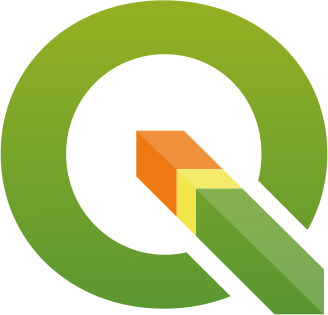

My Skills
R Programming

Python

Java Script

Google Earth Engine

QGIS
Geógrafo formado pela Universidade Federal do Pará (UFPA), com experiência em Geoprocessamento, Sensoriamento Remoto e Análise de Vulnerabilidade Costeira. Desenvolvo pesquisas aplicadas à gestão ambiental utilizando ferramentas como Google Earth Engine (GEE), QGIS e linguagens de programação (JavaScript e R).
R Programming
Python
Java Script
Google Earth Engine
QGIS
Pós Doutorado .
Doutorado
Mestrando em Geografia
Bacharelado Geografia
Prêmio Jovem Pesquisador (a) Destaque em Pesquisa Interdisciplinar na Amazônia
Núcleo de Altos Estudos Amazônicos (NAEA) da UFPA